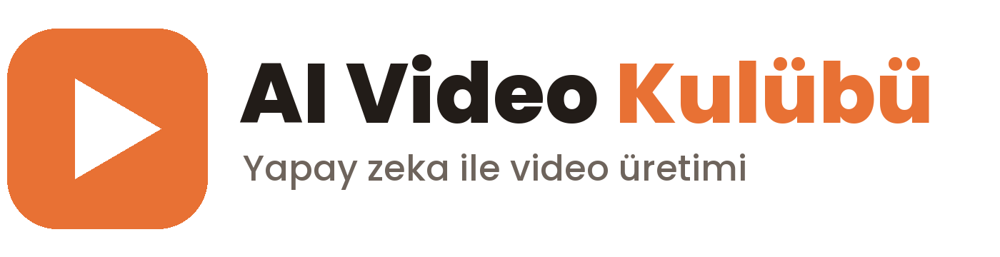

AVK Sinema'yı indirin
Türkçe, ultra gerçekçi yapay zeka videoları. Kurulum 2 dakika.
Kurulum
- Dosyayı indirip açın ve kurun.
- İlk açılışta uyarı çıkarsa (program henüz imzasız):
Mac: Uygulamalar klasöründe AVK Sinema'ya sağ tıklayıp "Aç" deyin, çıkan pencerede yine "Aç".
Windows: "Daha fazla bilgi" › "Yine de çalıştır".
- "İlk giriş" sekmesinden Skool'da kullandığınız e-postayı yazın ve kendinize bir şifre belirleyin.
- Kurulum ekranında Google Flow'a ve ChatGPT'ye (veya Claude'a) "bağlan" deyin. Açılan pencerede giriş yapın, gerisini program yapar.
Gerekenler
- AI Video Kulübü üyeliği (Skool e-postanız)
- Google AI Pro veya Ultra üyeliği (Google Flow için)
- ChatGPT veya Claude hesabı (ücretsiz de olur)
Ek program kurmanız gerekmez. Tarayıcı ve video araçları programın içinde gelir.